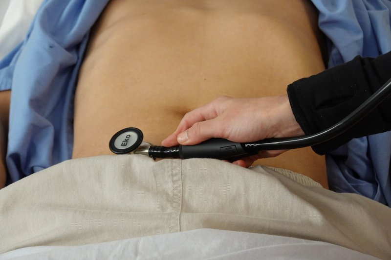
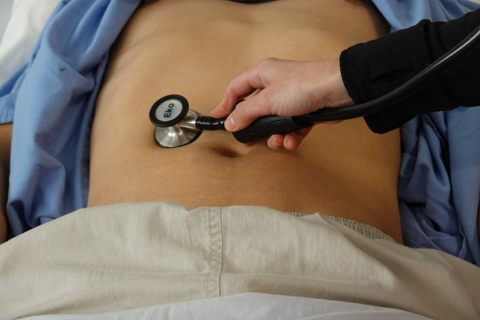
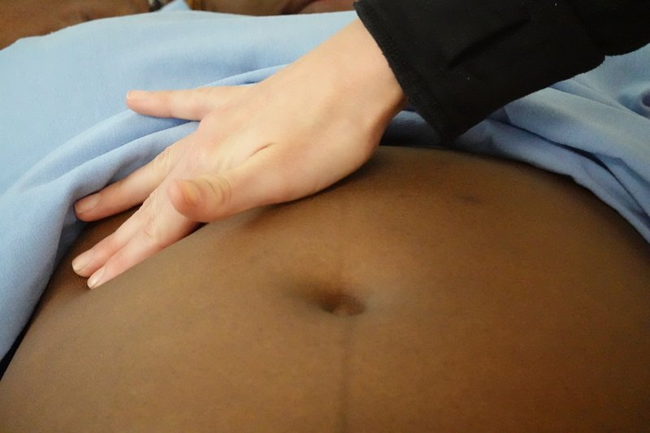
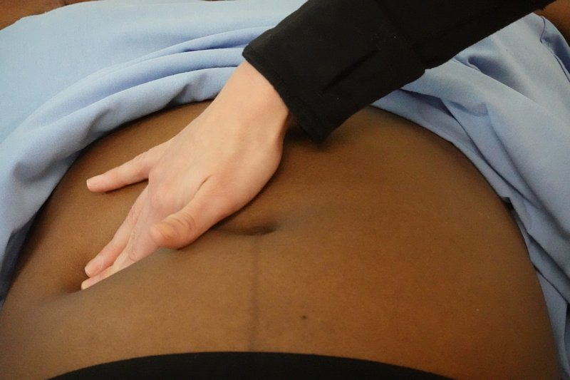

Inspect, auscultate, percuss, palpate, then the organs and a check for ascites. Each part is below in the order you do it: what to look for, each manoeuvre grouped under the problem you suspect (numbered steps and what counts as positive), and its pearls. Built from the Week 3 session and the course objectives; anything only the Gastroenterology session adds is tagged later.
Look: everything shown. Pick a region below to jump to it.
Listen before you touch, and ask where it hurts and examine that spot last, watching the patient's face the whole time.
General approach
Every abdominal exam
The general approach
Say it first (TOSCE): "Hello, I'm ___, a medical student. Can I check your name and date of birth against your wristband? I'd like to examine your tummy, which means looking, listening, tapping and pressing on it. Is that alright? Is there anywhere that hurts? I'll leave that spot until last." Check the name on the wristband and the chart. Then wash your hands (15 seconds), clean the stethoscope, and put on any protective equipment needed (gown, mask, eye protection, gloves). Explain what you are doing as you go.
Position and draping: patient lying flat on their back (supine), relaxed and comfortable, arms at their sides or folded across the chest; uncover the abdomen and keep the rest properly draped; warm your hands and stethoscope
Vitals: heart rate (average 60-100), respiratory rate (14-20 a minute), blood pressure (average about 120/80), temperature (35.8-37.3 °C), oxygen saturation (SpO2, normal above 94%)
Inspect: the whole patient first (hands, face, skin), then the abdomen from the side of the bed and from the foot
Auscultate: bowel sounds and a bruit over the aorta, before palpation
Percuss: all four quadrants, then the liver and spleen
Palpate: light, then deep, then the organs, then ascites, then the legs for edema
the four quadrants are right upper (RUQ), left upper (LUQ), right lower (RLQ) and left lower (LLQ)
painful area last, every time
Tap to reveal
Before you examine: the GI history
An organized, patient-centred history comes first later: PoM 1 Gastroenterology
History of the presenting illness: OPQRST (Onset, Provocation, Quality, Region/Radiation, Severity, Timing)
GI symptoms: nausea, vomiting (what it looks like), change in bowel movements (any blood?), diarrhea, constipation, passing gas?, abdominal pain (related to eating? to bowel movements?), fever, weight loss, blood in the stool, fatigue, rashes
Past history: illnesses, hospitalizations, surgeries · medications and allergies · family history
Social: occupation, alcohol, smoking, drugs (especially injection drug use for liver disease), diet and exercise, recent travel, sick contacts, high-risk sexual activity (liver)
For a liver complaint, add: dark urine, blood in the stool or vomit, itch (pruritus), easy bruising
Review the cardinal GI symptoms not yet covered: weight, diet, loss of appetite (anorexia), vomiting, heartburn, difficulty swallowing, excess gas, altered bowel habit, abdominal pain, bleeding, medications, itch, risk factors for liver disease
Then a quick review of the other systems (headache, vision, cough, palpitations, shortness of breath, chest pain, muscle aches, night sweats)
Tap to reveal
Look at the patient
PPES 1 · Week 3 · 3 manoeuvres
What to look for
Before the manoeuvres
Does the patient look well or unwell? Calm or in pain? Body build and nutritional status, manner and emotional state
look around the bed too: stoma bag, drain, feeding tube, catheter
Skin and eyes: jaundice (yellow skin, yellow whites of the eyes = scleral icterus) → liver disease · pallor → anemia (GI bleeding, malabsorption)
Hands, face and chest: look for the signs in the table below; the liver stigmata row groups the ones that point to liver disease
Mouth: lips (ulcers, cracks), tongue (cyanosis, papillae), teeth (cavities), gums (bleeding, inflammation), lining of the mouth and throat (pallor, redness, ulcers, masses) later: PoM 1 Gastroenterology
Tap to reveal
Hands: liver and kidney failure
Asterixis
Hepatic encephalopathy (brain affected by liver failure) or kidney failure (uremia) · tremor of the hands later: PoM 1 Gastroenterology
Steps
Ask the patient to stretch both arms out in front
Bend the wrists back and spread the fingers, as if stopping traffic
Hold the position and watch the hands
Positive
A flapping of the hands (brief, irregular loss of wrist posture)
Schamroth window: put the nails of two matching fingers back to back and look for the diamond-shaped gap
Positive
The angle between nail and nail fold is lost, the nail curves over the fingertip, and the diamond gap closes
Tap to reveal
Chronic liver disease
Liver stigmata (hands, face, chest)
Chronic liver disease
Steps
Hands: temperature, leukonychia (white nails), palmar erythema (red palms), Dupuytren's contracture (a finger pulled into a bent position), thenar and hypothenar wasting (thin thumb-side and little-finger-side muscles), Terry's nails later: PoM 1 Gastroenterology
Face: scleral icterus, parotid enlargement (swollen glands in front of the ears), central cyanosis (blue lips), temporal balding later: PoM 1 Gastroenterology
Chest: spider nevi (small spider-like blood vessels), and in a male gynecomastia (breast enlargement)
Positive
Any of these; Dupuytren's points to alcohol and smoking, leukonychia and palmar erythema to liver disease
Tap to reveal
Pearls
Remember
The course's checklist for the abdominal skin is SEADS: Swelling, Erythema, Atrophy, Deformities, Scars (see section 4).
Stand at the side of the bed: scars, skin, veins, contour, movement with breathing
Look across the abdomen at skin level for asymmetry
Go to the foot of the bed: bulging flanks and leg swelling
Positive
Distension, asymmetry, a visible mass or loops, caput medusae, bulging flanks, Cullen's or Grey Turner's sign
Tap to reveal
Hernia or mass
Hernia check (head raise or cough)
An incisional hernia (a bulge through an old scar) or a mass
Steps
Ask the patient to lift their head off the pillow, or to cough
Watch the abdominal wall, especially along scars
Positive
A bulge appears or stands out
Tap to reveal
Auscultate
PPES 1 · Week 3 · 2 manoeuvres
What to look for
Before the manoeuvres
Listen before you percuss or palpate: pressing on the belly changes the bowel sounds, and it is kinder to the patient
Warm the stethoscope; use the diaphragm
Tap to reveal
Is the bowel working?
Bowel sounds
Present or absent, symmetric, how loud

Steps
Place the stethoscope in each of the four quadrants (RLQ, RUQ, LUQ, LLQ)
Listen in each for long enough to hear a gurgle
Say whether sounds are present or absent, symmetric, and how loud
Positive
Normal: intermittent gurgles, roughly every 5-10 seconds. Constant sound, or none for more than 1 minute = abnormal
Tap to reveal
Narrowed artery
Bruits (aorta, renal, iliac, femoral)
A narrowed artery (stenosis)

Steps
Listen over the aorta, just above the umbilicus
If you suspect arterial disease, also over the renal, iliac and femoral arteries
Positive
A whooshing sound (bruit) from turbulent blood flow
Tap to reveal
Pearls
Remember
Say: "Bowel sounds present in all four quadrants; no aortic or renal bruits."
Tap to reveal
Percuss
PPES 1 · Week 3 · 1 manoeuvres
What to look for
Before the manoeuvres
Percuss all four quadrants, painful area last
What it tells you: how much gas there is and where, whether a mass is solid or fluid-filled, and the size of the liver and spleen
Tap to reveal
Gas, mass or enlarged organ
Percussion of the four quadrants
A mass or an enlarged organ (large dull areas)
Steps
Lay the middle finger of one hand flat on the abdomen
Tap its middle joint with the tip of the other hand's middle finger
Work through all four quadrants, painful area last
Positive
Normal = tympany (hollow drum note from gas; stool or normal fluid give small patches of dullness). Large areas of dullness = an underlying mass or enlarged organ (or ascites, section 10)
Tap to reveal
Pearls
Remember
Say: "Tympanic to percussion in all four quadrants, no areas of dullness."
Tap to reveal
Palpate
PPES 1 · Week 3 · 6 manoeuvres
What to look for
Before the manoeuvres
Patient's arms at their sides or folded across the chest; painful area last, every time
Tell the examiner you are watching the patient's face, and for involuntary guarding
Signs of peritonitis: rebound tenderness, pain when you percuss, guarding, pain when the bed is bumped (see section 11)
Tap to reveal
Tenderness and masses
Light palpation
Discomfort (tenderness), resistance from an organ or mass, superficial masses

Steps
One hand, palm and fingers together, gently
Press lightly, all four quadrants, painful area last
Watch the patient's face
Positive
Tenderness, resistance, or a superficial mass
Tap to reveal
Deep palpation
Tenderness, enlarged organs or masses

Steps
Bend the hand at the knuckles (metacarpophalangeal joints) and press deeply, often one hand on top of the other
All four quadrants
For a mass note its location, size, shape, consistency, tenderness and whether it pulses
Positive
Tenderness, an enlarged organ or a mass
Tap to reveal
Peritonitis
Guarding
Irritation of the abdominal lining (peritonitis)
Steps
Notice tensing of the muscles on palpation
Help the patient relax (breathe out, bend the knees), then feel again
Positive
Guarding that goes away = voluntary. Guarding that stays = involuntary, which points to peritonitis
Tap to reveal
Wall or deeper?
Head-raise test for tenderness
Whether tenderness is in the abdominal wall or inside the abdomen
Steps
Find the tender spot
Ask the patient to lift their head off the bed (this tenses the abdominal wall)
Press on the same spot again
Positive
Pain the same or worse = the wall itself (superficial) · pain less = the tensed muscles are shielding something deeper (deep)
Tap to reveal
Aortic aneurysm
Aorta width
An enlarged aorta (abdominal aortic aneurysm, AAA)
Steps
One hand on each side of the aorta, in the upper abdomen just above the umbilicus
Press firmly and deeply
Estimate the gap between your hands
Positive
Wider than 3 cm (normal: about 2 cm)
Tap to reveal
Kidneys
Kidneys (bimanual)
The lower edge (pole) of each kidney
Steps
Palpate bimanually (one hand behind the flank, one hand in front)
Feel for the lower margin of each kidney
Positive
A kidney you can feel (optional in the Gastroenterology session)
Tap to reveal
Pearls
Remember
The steps for feeling the kidneys are not in the course material beyond the objective itself: practise them in session.
Tap to reveal
Liver
PPES 1 · Week 3 · 3 manoeuvres
What to look for
Before the manoeuvres
Start low, in the right lower quadrant, so you don't miss a very large liver
If the edge is felt: follow the whole lower margin, feel the surface (smooth, nodular, soft, firm), then percuss the upper margin and measure the span
Tap to reveal
Hepatomegaly
Liver span (percussion)
Liver size
Steps
In the right midclavicular line, percuss upward from the RLQ until tympany turns dull = lower border
Percuss downward from the right chest until resonance turns dull = upper border
Measure the distance in centimetres
Positive
More than 12 cm = enlarged (hepatomegaly) (normal: 6-12 cm in the midclavicular line, 4-8 cm in the midsternal line)
Tap to reveal
Liver edge (palpation)
The lower margin of the liver
Steps
Hand in the RLQ, just outside the right rectus muscle, fingers pointing toward the costal margin (bottom of the ribs)
Patient takes deep breaths: press gently on the breath in (the liver moves down)
Move the hand up on each breath out, until you meet the edge or the costal margin
Or the hooking technique: hook the fingers under the rib edge, press in and up, deep breath in
Positive
An edge that touches your hand below the costal margin on a deep breath = enlarged liver (normal: usually not felt; if felt, smooth)
Patient winces and stops breathing in (the gallbladder hits your hand)
Tap to reveal
Pearls
Remember
Say: "Liver span 9 cm in the right midclavicular line; liver edge not palpable."
Tap to reveal
Spleen
PPES 1 · Week 3 · 2 manoeuvres
What to look for
Before the manoeuvres
The spleen enlarges diagonally, from the left upper quadrant toward the right lower quadrant, so you start low on the right and work up toward it
Tap to reveal
Splenomegaly
Castell's sign (percussion)
An enlarged spleen (splenomegaly)
Steps
Percuss the lowest intercostal space (about the 10th) in the left anterior axillary line
Percuss again with the patient in full inspiration (deep breath held), and in full expiration
Positive
Note turns dull on the deep breath in (normal: tympanic throughout)
Tap to reveal
Spleen tip (palpation)
The lower margin of the spleen
Steps
Start in the RLQ, lightly, just outside the left rectus muscle as you approach
Press on the breath in; move up diagonally toward the LUQ on each breath out
Near the ribs, your other hand lifts the lower left rib cage
Not felt? Repeat with the patient rolled onto their right side, knees bent
Positive
A spleen tip you can feel = enlarged · if felt, measure its distance below the costal margin
Tap to reveal
Pearls
Remember
Say: "Spleen not palpable; Castell's sign negative."
Tap to reveal
Ascites
PPES 1 · Week 3 · 2 manoeuvres
What to look for
Before the manoeuvres
Ascites = fluid in the peritoneal cavity (the space around the bowel). Fluid sinks; gas-filled bowel floats on top. So the flanks go dull and the top stays tympanic
Look first for bulging flanks (from the foot of the bed)
Tap to reveal
Fluid in the belly
Shifting dullness
Ascites, by percussion
Steps
Patient on their back: percuss from the midline out to the flank and mark where tympany turns dull
Roll the patient onto their side and wait for the fluid to settle
Percuss again and re-mark the border
Positive
The dull border moves toward the lower (dependent) side, more than 5 cm
Tap to reveal
Fluid wave
Ascites (large amounts)
Steps
Patient (or a helper) presses the edge of their hand firmly down the midline (stops the wave travelling through fat)
Tap one flank briskly
Feel with your other hand on the opposite flank
Positive
An impulse felt on the other side, carried through the fluid
Tap to reveal
Appendicitis tests
PoM 1 · Gastroenterology · 5 manoeuvres
What to look for
Before the manoeuvres
Done during palpation when the history suggests appendicitis; then offer the liver and spleen assessment
Tap to reveal
Peritonitis
Rebound tenderness
Peritonitis (irritated abdominal lining)
Steps
Press slowly and deeply
Let go quickly
Positive
Pain is worse on letting go than on pressing
Tap to reveal
Appendicitis
McBurney's point
Acute appendicitis
Steps
Find the point one-third of the way from the right anterior superior iliac spine (ASIS) to the umbilicus
Press deeply there
Positive
Deep, localized tenderness at that point
Tap to reveal
Rovsing's sign
Appendicitis
Steps
Press in the left lower quadrant
Positive
Pain felt in the right lower quadrant
Tap to reveal
Psoas test
Appendicitis (the appendix lying on the psoas muscle)
Steps
Patient on their back
Patient lifts the right leg against your hand's resistance (contracts the psoas)
Positive
Abdominal pain (the working muscle rubs the inflamed tissue)
Tap to reveal
Obturator test
Appendicitis (the appendix lying on the obturator muscle)
Steps
Patient on their back, hip and knee each bent to 90°
One hand on the ankle, one on the knee
Rotate the hip inward (pull the ankle out, let the knee fall in)
Positive
Abdominal pain
Tap to reveal
Finishing and next steps
PPES 1 · PoM 1 · 2 manoeuvres
What to look for
Before the manoeuvres
With the patient still lying flat, inspect and press the legs for edema (swelling that leaves a dent = pitting edema)
Thank the patient, re-cover them, wash your hands; take off protective equipment (gloves, gown, hand hygiene, eye protection, mask, hand hygiene)
Tap to reveal
Fluid in the legs
Leg edema
Fluid in the legs (liver, kidney or heart failure, low albumin)
Steps
Patient still lying flat: look at both legs and feet for swelling
Press firmly with a thumb over the shin or ankle for a few seconds
Let go and look for a dent
Positive
A dent that stays = pitting edema
Tap to reveal
Groin
Inguinal nodes and hernias
Lymph nodes or a hernia in the groin extra
Steps
Feel along the inguinal ligament (groin crease)
Ask the patient to cough while you feel
Positive
A node or a bulge
Tap to reveal
Pearls
Remember
Offer a digital rectal exam; don't perform one in a teaching OSCE extra
Build and rank a differential diagnosis from the history and exam, and a first management planlater: PoM 1 Gastroenterology
hepatitis serology · celiac antibody test (TTG IgA)
imaging: abdominal X-ray, ultrasound
Tap to reveal
Videos
Video demonstrations from the Health Education Media Library (Western Libraries; Arthur Labatt Family School of Nursing), CC BY-NC 4.0, played from the library's own server; each opens only when you tap it. Teaching videos from Geeky Medics and other channels open from YouTube when tapped. Photographs are from the same library; the other figures are drawn schematics.
Image credits
Images reused under their open licences (Creative Commons or public domain). Some were cropped to hide faces.
Bowel sounds: Arthur Labatt Family School of Nursing, Western University (Health Education Media Library, Western Libraries), CC BY-NC 4.0, source
Bruits (aorta, renal, iliac, femoral): Arthur Labatt Family School of Nursing, Western University (Health Education Media Library, Western Libraries), CC BY-NC 4.0, source
Light palpation: Arthur Labatt Family School of Nursing, Western University (Health Education Media Library, Western Libraries), CC BY-NC 4.0, source
Deep palpation: Arthur Labatt Family School of Nursing, Western University (Health Education Media Library, Western Libraries), CC BY-NC 4.0, source